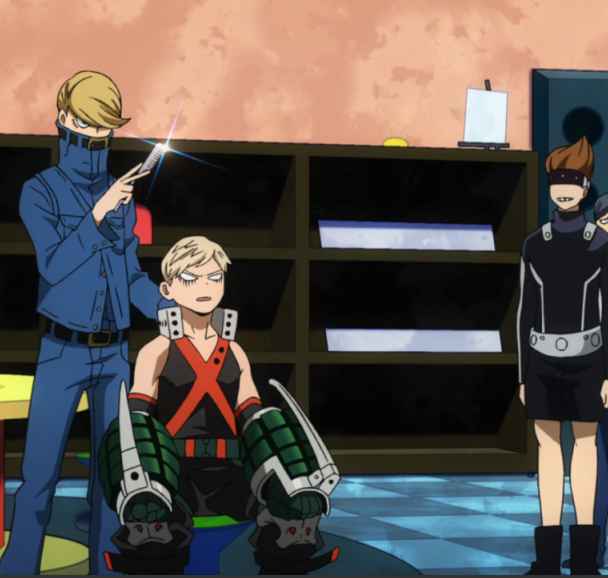
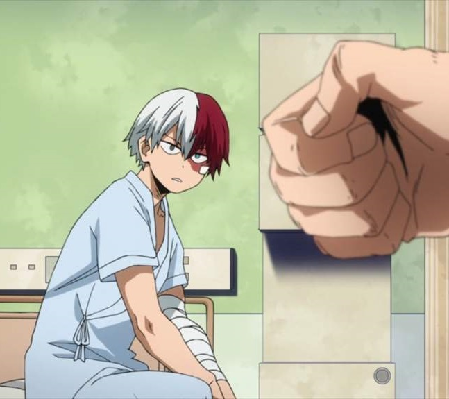

Still recovering from the previous incident, the school is about to hold the Sports Festival, which will serve as an opportunity for the students to show off their Quirks to professional heroes looking for sidekicks. In the occasion, All Might confesses to Izuku that his powers are diminishing, and that the festival is an opportunity for Izuku to show his true value to the world.
S2 E2 "Roaring Sports Festival"
Todoroki expresses to Izuku that he will defeat him and show his true power. As the Sports Festival begins, the students from the four branches of the school - Hero, General Studies, Business and Support Courses - participate in an obstacle-course race.
S2 E3 "In Their Own Quirky Ways"
During the obstacle race, Todoroki effortlessly passes each obstacle with Bakugo in hot pursuit. At the last obstacle, Izuku uses his wits to pass through both and win the race. However, his victory is short-lived when he learns that by being first place, he is the top target for the next round.
S2 E4 "Strategy, Strategy, Strategy"
In the next round, the Cavalry Battle, Izuku teams up with Ochako, Tokoyami and Support Course student Mei. Being the team with most points, they barely evade the advances from the other teams from their class, while the students from Class B take advantage of it to claim points for themselves.
S2 E5 "Cavalry Battle Finale"
As the end of the Cavalry Battle approaches, Izuku's team has a heated confrontation with the team led by Todoroki. Despite losing first place to them, they earn a place in the next round by working together.
S2 E6 "The Boy Born with Everything"
The 16 remaining students advance to the final stage, with one-on-one battles to decide the winner. Before the fights begin, Todoroki has a private talk with Izuku, revealing the reasons for his hatred toward his father, the world's second-best hero Endeavor.
S2 E7 "Victory or Defeat"
In the first round, Izuku is struck by Hitoshi Shinso's brainwashing ability, but breaks free in the last moment and obtains victory, while Todoroki displays his overwhelming power and easily wins his match against Hanta Sero, becoming Izuku's opponent in the following round.
S2 E8 "Battle on, Challengers!"
The U.A. Sports Festival continues with the completion of the other six bracket matches. Shiozaki swiftly overcomes Kaminari. Mei manipulates Iida in order to show off her tech to support companies, giving him the win by stepping out. Mina beats Aoyama by exploiting his weakness. Yaoyorozu is overwhelmed by the speed of Tokoyami's Dark Shadow and is pushed out of the ring. Tetsutetsu and Kirishima have a homestyle brawl ending in a tie. Throughout all of this, Ochako is trying to prepare herself for the daunting task of battling Bakugo.
S2 E9 "Bakugo vs. Uraraka"
Ochako uses many different strategies to attempt to defeat Bakugo. However, despite her plans, Bakugo wins after Ochako falls unconscious. Afterwards, Ochako talks over the phone with her father who tries to console her, but to no avail. Also during this time, Tetsutetsu and Kirishima have an arm-wrestling contest to determine who moves on to the next round; Kirishima wins and the two become friends. Izuku prepares for his fight with Todoroki.
S2 E10 "Shoto Todoroki: Origin"
Izuku and Todoroki begin their match. Izuku, while still trying to win, is attempting to get Todoroki to use his left side so they can both battle at their full power. As Todoroki fights on, more of his past is revealed through flashbacks. He remembers his mother saying it was okay to use his left side because he wanted to be a hero. So Izuku fights Todoroki who is using both sides. Cementoss and Midnight attempt to stop the match before the two deal their final attacks but to no avail. Izuku is thrown out of bounds and Todoroki moves on.
S2 E11 "Fight on, Iida"
Izuku caused significant damage in his right hand warranting surgery; school nurse Recovery Girl refuses future treatment if he does it again. All Might admits to his youth being identical to Izuku's. Todoroki admits to Endeavor that he was able to use his left side fire because he forgot all about his father. In the last matches of the second round, Iida and Tokoyami push respective opponents Shiozaki and Ashido out of bounds, while Bakugo overpowers Kirishima. When Iida fights Todoroki, Iida is frozen and rendered unable to go on. Bakugo figures out Tokoyami's weakness to intense light as they fight and makes him yield. Meanwhile in Tokyo, Iida's brother Ingenium is seriously injured and paralysed in pursuit of the Hero Killer: Stain, and Iida is informed not long after by his mother. Stain is invited by Kurogiri to meet with Shiguraki about joining the League of Villains.
S2 E12 "Todoroki vs. Bakugo"
Todoroki is still unsure if he should be using his left side. As the match starts, Todoroki attacks Bakugo with his ice power. Bakugo becomes angry as he wants Todoroki to fight him with both of his sides. After Izuku's cheer, Todoroki decides to use his left side but when Bakugo is about to use his "Howitzer Impact", Todoroki suddenly stops using his left side. The attack pushes Todoroki out of bounds, resulting in Bakugo being named the winner. Angered, Bakugo still goes after Todoroki, but Midnight stops him. After the match, All Might gives everyone medals. Iida already left to see his brother at the hospital and did not attend the award ceremony. After everyone went home to recover, Todoroki finally decides to go see his mother whom he had not seen for many years.
S2 E13 "Time to Pick Some Names"
The Sports Festival is over, and everyone's injuries are almost recovered. Mr. Aizawa announces that everyone has to decide a hero name for themselves, and that since many of the students have gotten multiple offers from pro heroes, everyone will be doing a one-week internship at a hero agency. Midnight joins in to offer feedback on everyone's hero name requests. After that, everyone chooses an agency for their internship. Izuku is still not sure which agency he should join when suddenly All Might shows up. He tells Izuku that his teacher has offered an internship, and Izuku accepts it. Meanwhile, Iida picks an agency in the area where his brother was attacked. The next day, everyone sets off for the internships.
S2 E14 "Bizarre! Gran Torino Appears"
The internship program starts and Izuku is waiting to meet Gran Torino but when he does he is not what he expected. Izuku begins to leave until Gran Torino shows his power and tempts Izuku to fight him. Meanwhile Tenya is looking for hero-killer Stain and the other students of Class A are also busy in their internship. Izuku trains hard with Gran Torino and finally starts to understand One For All.
S2 E15 "Midoriya and Shigaraki" 
Now that Izuku knows how to control some of his powers he starts to train more and more with Gran Torino to perfect that power. All Might learns more about the captured Nomu. After Stain refuses to join the League of Villains, he returns to Hosu City to hunt down more heroes. Shigaraki also goes to Hosu, releasing several Nomus into the city. On the way to respond to the Nomu attacks, Tenya discovers Stain just as he is about to kill another hero. Meanwhile, Gran Torino decides to take Izuku to Shibuya City, and their train is attacked by a Nomu as they pass Hosu.
S2 E16 "Hero Killer: Stain vs U.A. Students"
Hosu City is under attack by Stain and by three Nomus released by the League of Villains. As Gran Torino battles the Nomu that attacked their train, Izuku searches the city for Tenya and arrives just in time to prevent Stain from killing him. Having received a cryptic message from Izuku before he attacked Stain, Shoto arrives just as Stain has used his Quirk to paralyze Izuku. As Izuku figures out the secret of Stain's Quirk, Shoto struggles to evade Stain's many blades and Tenya struggles with his own rage and quest for vengeance.
S2 E17 "Climax"
Tenya fights off Stain's Quirk and joins the battle with Shoto and Izuku. Endeavor and Gran Torino defeat a Nomu while the three UA students defeat Stain - at the cost of serious injuries to Tenya and Izuku. Endeavor defeats the remaining Nomu and controls the situation.
S2 E18 "The Aftermath of Hero Killer: Stain" 
Following Stain's arrest, the video of Stain expressing his views on the present Heroes has gone viral, and more people are falling to those views. With Stain in custody, they begin to gravitate towards the League of Villains. Meanwhile, credit for the arrest has gone to Endeavor, to ensure that Tenya, Izuku and Shoto are not arrested for using their powers without permission. Iida apologizes for his rash behavior and decides to work on improving himself.
S2 E19 "Everyone's Internships"
Anime-original episode showing what some of the other characters did during their internships, particularly Tsuyu/Froppy.
S2 E20 "Listen Up!! A Tale from the Past"
Following their internships, everyone has returned to school, and All Might decides to tell Izuku the truth behind his Quirk, One for All. The true mastermind of the League of Villains is revealed to be All For One, a man who can steal and grant Quirks.
S2 E21 "Gear up for Final Exams"
Final exams are approaching, and the class prepares for their written and practical exams. Momo hosts a study party at her mansion, and Itsuka tells Izuku and his friends that the practical exam will be against robot enemies. After making it through three days of written exams, everyone is shocked to learn that the practical exam will not involve robots this year - instead, they will be fighting in predetermined pairs against one of their teachers. To pass, they must either defeat the teacher or escape the arena before time runs out.
S2 E22 "Yaoyorozu: Rising"
Tsuyu and Fumikage work together to evade Ectoplasm's army of clones. Tenya and Mashirao face off against the burrowing Power Loader. Todoroki and Momo, whose confidence was shattered after being easily defeated by Fumikage in the Sports Festival, attempt to evade Aizawa's Quirk.
S2 E23 "Stripping the Varnish"
Ochako and Yuga try to avoid being sucked into Thirteen's black hole. Yuga asks Ochako if she likes Izuku, prompting an unexpected resolution to their match with Thirteen. Denki and Mina attempt to evade the buildings being toppled by Principal Nezu as he strategically cuts off their escape routes. Kyoka and Koji, who both have sound-dependent Quirks, struggle to come up with a strategy against Present Mic's overpowering noise. Mezo creates a distraction to allow Toru an opening against Snipe. Midnight takes out Hanta quickly, leaving Mineta alone against her somnambulist Quirk.
S2 E24 "Katsuki Bakugo: Origin"
The final match of the final exams pits Izuku and Katsuki against All Might. Izuku struggles to convince Katsuki to work with him, especially since Izuku believes they have no choice but to escape and Katsuki seems determined to fight All Might head-on. Even with All Might's diminishing strength and weights, both students face serious injuries as they put everything they have into the fight.
S2 E25 "Encounter"
At the League of Villains hideout, two visitors express interest in joining the League of Villains. Tomura resents the fact that Stain's ideology has inspired so many people when his own approach has not been nearly as successful. Meanwhile, Izuku and his classmates go on a shopping trip to prepare for summer training camp.